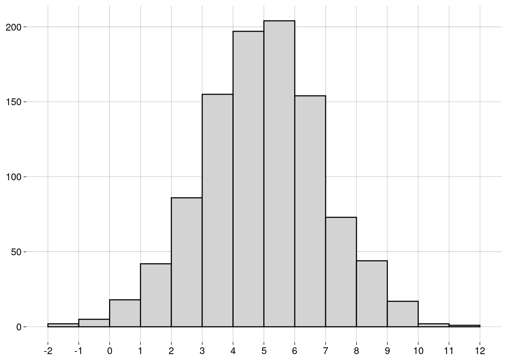
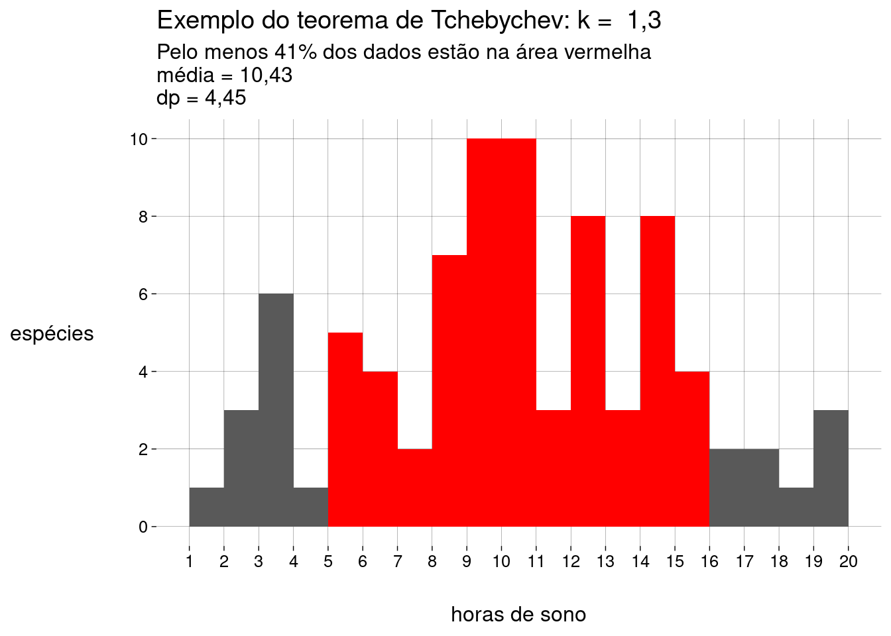

Capítulo 6 Medidas
6.2 Medidas de centralidade
6.2.1 Média
-
A média de uma população é escrita como \(\mu\), e é definida como \[\mu = \frac{\sum_{i=1}^N x_i}{N}\]
\(\sum_{i=1}^N x_i\) é a soma de todos os dados da população.
\(N\) é a quantidade de elementos na população.
-
A média de uma amostra é escrita como \(\bar x\), e é definida como: \[\bar x = \frac{\sum_{i=1}^n x_i}{n}\]
\(\sum_{i=1}^n x_i\) é a soma de todos os dados da amostra.
\(n\) é a quantidade de elementos na amostra.
O cálculo é essencialmente o mesmo. Só mudam os símbolos: \(N\) versus \(n\), e \(\mu\) versus \(\bar x\).
6.2.2 Mediana
Já aprendemos sobre a mediana na seção sobre boxplots.
A idéia é que, depois de ordenar os dados, \(50\%\) dos dados estarão à esquerda da mediana, e \(50\%\) à direita.
A mediana não é tão sensível a outliers quanto à média.
6.2.3 Moda
A moda é o valor mais frequente do conjunto de dados.
Pode haver mais de uma moda.
Não existe uma função para a moda em R base. Por quê?
Por incrível que pareça, é complicado definir a moda de forma a conseguir resultados interessantes.
-
Por exemplo, vamos definir um conjunto de \(1000\) valores numéricos distribuídos normalmente4, com média igual a \(5\) e desvio-padrão5 igual a \(2\):
normal <- rnorm(1000, mean = 5, sd = 2) -
O histograma dos nossos dados é
 -
Vamos calcular a moda com a função
mfv(most frequent value), do pacotemodeest:## Registered S3 method overwritten by 'rmutil': ## method from ## print.response httr# Por causa de um bug na função mfv, # precisamos de números com ponto decimal # (em vez de vírgula): options(OutDec = '.') mfv(normal)## [1] -1.330384665 -1.107800365 -0.898298760 -0.731445306 -0.455501957 -0.101562879 ## [7] -0.044750408 0.005147617 0.042285407 0.456712508 0.496916947 0.524993301 ## [13] 0.639073377 0.652382860 0.667022166 0.668861972 0.719138085 0.826413394 ## [19] 0.836006225 0.849914241 0.859764483 0.873055847 0.893854109 0.900782032 ## [25] 0.952636697 1.109806183 1.149237287 1.193055214 1.245474296 1.265074807 ## [31] 1.302535410 1.327182883 1.353300473 1.354384726 1.366839045 1.386335578 ## [37] 1.417265901 1.459551224 1.472035374 1.485201070 1.498607854 1.508839419 ## [43] 1.535418869 1.541116603 1.547032043 1.560859089 1.579327318 1.586980312 ## [49] 1.627844059 1.674246239 1.678234555 1.713308607 1.759264371 1.765758311 ## [55] 1.786730502 1.794427590 1.831881497 1.844513518 1.856171429 1.862843469 ## [61] 1.877559289 1.886516458 1.889058077 1.898551551 1.916653050 1.968366435 ## [67] 1.984315329 2.001039970 2.056431295 2.062489336 2.074790416 2.074832673 ## [73] 2.087034473 2.100438899 2.189816543 2.190159500 2.192694959 2.207384897 ## [79] 2.210585392 2.226741858 2.238337497 2.238354918 2.256831699 2.272361181 ## [85] 2.276903053 2.285852894 2.288012608 2.289827540 2.309858119 2.310781350 ## [91] 2.320496253 2.348570829 2.356587964 2.356816757 2.376546342 2.377243327 ## [97] 2.382402987 2.386441054 2.417514463 2.422763504 2.438927128 2.466015020 ## [103] 2.478241420 2.487155835 2.496869342 2.505854220 2.507901604 2.514997274 ## [109] 2.533383237 2.550973099 2.572573593 2.579409350 2.583219219 2.584173749 ## [115] 2.591230106 2.595304629 2.596236230 2.600840760 2.615788786 2.617688992 ## [121] 2.631932959 2.632516474 2.643984349 2.649113332 2.653455770 2.656118680 ## [127] 2.659034439 2.661591017 2.662740379 2.671768382 2.686742494 2.727905471 ## [133] 2.743110173 2.756004358 2.757185913 2.762562276 2.775491905 2.794054498 ## [139] 2.804388241 2.810112567 2.821316003 2.837527135 2.843368122 2.846133915 ## [145] 2.905077827 2.924503903 2.927342874 2.930446839 2.939096700 2.949673509 ## [151] 2.966116682 2.979904167 2.998407028 3.014687175 3.043345456 3.055187863 ## [157] 3.058666505 3.062848464 3.066433266 3.080354346 3.096007307 3.114384024 ## [163] 3.122633082 3.125689288 3.149638706 3.173384881 3.175853483 3.180165120 ## [169] 3.189922770 3.200024572 3.209026720 3.220487500 3.221869687 3.229532984 ## [175] 3.236260830 3.236605100 3.241224221 3.246504905 3.254123857 3.264313814 ## [181] 3.273167667 3.279020591 3.285386410 3.287511684 3.298766828 3.310968831 ## [187] 3.312853617 3.322495740 3.323917565 3.327759519 3.328778659 3.337969637 ## [193] 3.346255835 3.352202161 3.363137332 3.381023393 3.382646861 3.383013060 ## [199] 3.395849062 3.397040443 3.398299772 3.405773254 3.411159378 3.419605021 ## [205] 3.434559409 3.436177145 3.437886528 3.443152979 3.444592583 3.446756465 ## [211] 3.450486932 3.451104923 3.451589419 3.468581146 3.473558482 3.477068843 ## [217] 3.492181792 3.494422344 3.496161074 3.497923665 3.507868755 3.514775336 ## [223] 3.516852362 3.519507269 3.522174229 3.524896714 3.546364177 3.546636293 ## [229] 3.547563790 3.547994336 3.549661905 3.552264692 3.564076668 3.576660962 ## [235] 3.577978439 3.582323892 3.592351863 3.608630870 3.616500057 3.622814738 ## [241] 3.626857854 3.640847383 3.641814733 3.645725386 3.650513675 3.662017354 ## [247] 3.667475299 3.677491107 3.680289211 3.683472218 3.685992141 3.686170732 ## [253] 3.686751212 3.688005425 3.692672687 3.692683114 3.693991677 3.701046204 ## [259] 3.714420110 3.718385110 3.719517468 3.723056952 3.724954174 3.729165784 ## [265] 3.732949443 3.734474039 3.735568217 3.746229248 3.747622449 3.750468834 ## [271] 3.755801273 3.759539756 3.767929112 3.777866696 3.782397587 3.792997139 ## [277] 3.809931637 3.811001945 3.812801920 3.815181250 3.824575570 3.835527245 ## [283] 3.839330027 3.841158069 3.847914791 3.862083099 3.875449857 3.877764999 ## [289] 3.877910450 3.882546541 3.896168224 3.898883788 3.907986372 3.913057216 ## [295] 3.918299869 3.919815580 3.924160480 3.924909586 3.926647274 3.928955832 ## [301] 3.937903810 3.949467028 3.950889561 3.971387217 3.975664185 3.979280859 ## [307] 3.981538816 3.990111983 4.004751040 4.013388261 4.031827796 4.034280145 ## [313] 4.034300522 4.034776145 4.040385080 4.053558870 4.060984190 4.065041205 ## [319] 4.068758669 4.070554901 4.072048364 4.073484926 4.075018607 4.076780786 ## [325] 4.077659871 4.080020946 4.082574118 4.090389144 4.091061208 4.113970878 ## [331] 4.120968502 4.128975149 4.129141570 4.130565009 4.141403536 4.154196568 ## [337] 4.162494605 4.167244691 4.170941720 4.176302800 4.188479155 4.190149267 ## [343] 4.190702568 4.195008849 4.199593575 4.202673525 4.206385286 4.206459988 ## [349] 4.207103675 4.211896634 4.218312625 4.233390804 4.238654326 4.244156212 ## [355] 4.255334982 4.270496355 4.278169021 4.287559102 4.288410941 4.289323205 ## [361] 4.292811879 4.293574602 4.297092128 4.301835423 4.306928007 4.308918735 ## [367] 4.315544966 4.317464690 4.318777527 4.321230475 4.328152945 4.338564209 ## [373] 4.341468733 4.345441113 4.366837710 4.371227488 4.373075132 4.374876065 ## [379] 4.380429407 4.384646180 4.387065099 4.394928945 4.401588558 4.402127763 ## [385] 4.403088012 4.408123767 4.409968983 4.418750254 4.418934487 4.419693437 ## [391] 4.423202772 4.427475351 4.436747511 4.439150548 4.441786602 4.444778684 ## [397] 4.444882054 4.453660387 4.453717267 4.455354789 4.457315548 4.462612519 ## [403] 4.464117839 4.470000984 4.478155367 4.510053971 4.514282094 4.518648141 ## [409] 4.526394120 4.528107135 4.533921019 4.536089459 4.541139384 4.548990105 ## [415] 4.552300036 4.562030984 4.569328859 4.570313035 4.578615393 4.580877391 ## [421] 4.589356298 4.591132239 4.599730914 4.601457596 4.602058929 4.605472487 ## [427] 4.614098608 4.615654242 4.626076674 4.626675940 4.629211514 4.631371962 ## [433] 4.632050022 4.637196058 4.637888940 4.638535847 4.640032527 4.640391178 ## [439] 4.641614810 4.650065530 4.651697948 4.664100995 4.671776268 4.674533183 ## [445] 4.680365702 4.682255035 4.687942717 4.692719106 4.697635932 4.704002173 ## [451] 4.731227654 4.744489257 4.746669516 4.749772262 4.750575948 4.752299441 ## [457] 4.754073428 4.756789808 4.760692228 4.762909034 4.770600334 4.771869651 ## [463] 4.790967638 4.793504319 4.794723328 4.804501312 4.809644636 4.812393710 ## [469] 4.814712977 4.827169335 4.830664393 4.837890663 4.847796982 4.850763385 ## [475] 4.851523754 4.855679221 4.857974225 4.860476401 4.865538336 4.870661452 ## [481] 4.877162845 4.881743313 4.881939935 4.885076513 4.885673355 4.888317183 ## [487] 4.895934138 4.897960451 4.899244455 4.920163592 4.926858273 4.926866997 ## [493] 4.945927329 4.951463378 4.951977146 4.952711205 4.953748348 4.958825942 ## [499] 4.961011088 4.961592390 4.962102828 4.975525309 4.997059639 4.998610734 ## [505] 4.999709992 5.006487932 5.015610928 5.015797035 5.025439256 5.025536664 ## [511] 5.031476709 5.032524877 5.035542287 5.039345827 5.040306733 5.041861216 ## [517] 5.045498648 5.046100942 5.051739095 5.054384991 5.057572038 5.064858417 ## [523] 5.070554798 5.073670961 5.078879463 5.080216185 5.080447587 5.084186364 ## [529] 5.085052024 5.092601137 5.093640108 5.093731070 5.099935338 5.105257780 ## [535] 5.107208394 5.107553197 5.109776273 5.128066696 5.129153558 5.132620020 ## [541] 5.133369864 5.133742933 5.134133580 5.134416941 5.139353587 5.150503301 ## [547] 5.152715255 5.155874941 5.161686850 5.162434315 5.164254569 5.165226681 ## [553] 5.170525169 5.175258166 5.180701493 5.181606113 5.185717144 5.193210115 ## [559] 5.202251354 5.203603510 5.205758783 5.207062100 5.209276697 5.214412956 ## [565] 5.218730860 5.225760488 5.226491443 5.233459652 5.238947999 5.241425711 ## [571] 5.248578574 5.250331277 5.258692841 5.265992847 5.269994353 5.272898358 ## [577] 5.286861426 5.295728491 5.300860045 5.307153227 5.309473050 5.312834707 ## [583] 5.317979530 5.322140247 5.322823069 5.326869894 5.335339367 5.335760028 ## [589] 5.350382280 5.368525580 5.371190223 5.373088947 5.380018854 5.385371791 ## [595] 5.389447318 5.398664610 5.399354087 5.400974866 5.411377204 5.421337524 ## [601] 5.422367947 5.424992177 5.428277281 5.429210843 5.431439354 5.441231320 ## [607] 5.449171792 5.453060712 5.461963416 5.463222668 5.468120763 5.469735982 ## [613] 5.471150984 5.471847807 5.473493982 5.483830790 5.486940802 5.497531545 ## [619] 5.500846538 5.507281909 5.510113947 5.513789465 5.517645793 5.518956759 ## [625] 5.523512074 5.531297168 5.538212261 5.547775934 5.551582616 5.552139953 ## [631] 5.552959580 5.562009899 5.563826434 5.568531856 5.587203241 5.589336106 ## [637] 5.591694452 5.592515039 5.593101241 5.606363675 5.606524895 5.616008907 ## [643] 5.626804313 5.627766610 5.642397267 5.642629280 5.644305602 5.644611261 ## [649] 5.646632369 5.650578016 5.651420535 5.654953964 5.656074820 5.659109982 ## [655] 5.660262542 5.661720954 5.665496005 5.667305578 5.670378227 5.675233367 ## [661] 5.704778293 5.707709185 5.733037887 5.735360456 5.753827810 5.755535995 ## [667] 5.759101704 5.765407275 5.767994332 5.782588870 5.788462901 5.793442669 ## [673] 5.798029694 5.807036577 5.809406133 5.824766313 5.826185317 5.833634585 ## [679] 5.850983707 5.852485600 5.858431693 5.868495877 5.873161532 5.873223282 ## [685] 5.876841010 5.878774467 5.892206288 5.892702454 5.895968828 5.900712690 ## [691] 5.905157833 5.905830409 5.913117893 5.922208829 5.925453089 5.932272797 ## [697] 5.932403538 5.933840248 5.936348224 5.936390627 5.939171569 5.962840005 ## [703] 5.968738863 5.970984490 5.973044690 5.977662530 5.982209675 5.991983657 ## [709] 5.994161455 6.006691900 6.009725265 6.012533197 6.015384271 6.019355536 ## [715] 6.026733615 6.046066146 6.053324436 6.054735101 6.077800168 6.102320231 ## [721] 6.102804144 6.106372686 6.112268250 6.112763376 6.119946946 6.122846752 ## [727] 6.129934806 6.150613732 6.157713923 6.176028302 6.177736612 6.194944272 ## [733] 6.197546343 6.209573589 6.211673093 6.215348923 6.218800674 6.219474496 ## [739] 6.222847142 6.227301036 6.229791403 6.234937225 6.235054480 6.243100121 ## [745] 6.246346230 6.248431472 6.254434606 6.260643154 6.261188658 6.261717854 ## [751] 6.269070349 6.272957054 6.280276560 6.281242284 6.281730734 6.284746010 ## [757] 6.297476516 6.304331103 6.309394467 6.310226186 6.311059413 6.313190797 ## [763] 6.318836440 6.323590326 6.326871416 6.329830042 6.331874789 6.335705405 ## [769] 6.336593619 6.337049087 6.338548738 6.357087737 6.375737907 6.389502273 ## [775] 6.390036457 6.393550721 6.398545938 6.399523372 6.402089409 6.417236643 ## [781] 6.417358310 6.418255380 6.420395231 6.441727020 6.454860055 6.456798149 ## [787] 6.458554030 6.461952147 6.463695242 6.464608943 6.474185846 6.479148597 ## [793] 6.502639855 6.504842925 6.513548347 6.517176012 6.520832905 6.521379421 ## [799] 6.522377267 6.525132709 6.526931936 6.549550423 6.554287682 6.556829848 ## [805] 6.556929194 6.560022634 6.568121048 6.571867185 6.586506454 6.595069913 ## [811] 6.610835734 6.613103339 6.613235177 6.635760207 6.665802523 6.676876750 ## [817] 6.676950794 6.680173843 6.693236945 6.695602158 6.710077243 6.713599660 ## [823] 6.716037334 6.722671970 6.740713560 6.743015288 6.745661749 6.747184363 ## [829] 6.756993723 6.762664504 6.763402176 6.776170127 6.778570360 6.783827558 ## [835] 6.787351018 6.798903936 6.801343387 6.808699331 6.809836586 6.850319651 ## [841] 6.850430597 6.851377527 6.880322332 6.884957140 6.890151230 6.891610938 ## [847] 6.902005924 6.911077053 6.920534936 6.921430182 6.927231330 6.934062712 ## [853] 6.941244448 6.941308772 6.950658722 6.961691768 6.965153244 6.965290094 ## [859] 6.969545933 6.975699118 6.987653232 6.995065479 6.995574831 7.000821987 ## [865] 7.010805137 7.011111335 7.014263995 7.014870226 7.015302648 7.065944024 ## [871] 7.091548203 7.102198474 7.105262581 7.111883464 7.127148939 7.155646138 ## [877] 7.163385015 7.174054057 7.178632216 7.204149357 7.211636963 7.212662512 ## [883] 7.213722373 7.234537627 7.237095830 7.240521575 7.243715932 7.288902624 ## [889] 7.334387719 7.338631216 7.352593176 7.404139267 7.405479490 7.405544439 ## [895] 7.422771456 7.434715905 7.459305530 7.474138916 7.493719509 7.499525986 ## [901] 7.500919329 7.511953071 7.524283841 7.526935991 7.535157707 7.536664742 ## [907] 7.548733639 7.553861206 7.566561991 7.580390972 7.597843800 7.607257255 ## [913] 7.630778243 7.631496098 7.660707766 7.664488491 7.677160709 7.704410451 ## [919] 7.705948296 7.706186530 7.708777471 7.710628597 7.753723366 7.767693445 ## [925] 7.811052823 7.823826766 7.880554250 7.886196103 7.887803365 7.898063086 ## [931] 7.911727609 7.928715094 7.933789799 7.967696806 7.992133742 7.999708018 ## [937] 8.006163606 8.008438479 8.013610699 8.031567763 8.036180512 8.038920373 ## [943] 8.093121334 8.100528861 8.117823446 8.121873496 8.130002860 8.154621203 ## [949] 8.184993691 8.191268875 8.209943188 8.214966209 8.217813270 8.248211596 ## [955] 8.252626970 8.268542885 8.300338611 8.304686319 8.309823605 8.395297535 ## [961] 8.408879150 8.409663039 8.420846545 8.424350482 8.443484023 8.449902293 ## [967] 8.481648848 8.500022206 8.532769750 8.554203191 8.678484770 8.702579246 ## [973] 8.734928498 8.740925450 8.783304383 8.804329984 8.844632887 8.844909183 ## [979] 8.928181335 8.956462627 9.055892762 9.081127879 9.121634445 9.230494729 ## [985] 9.250394260 9.315623154 9.320188183 9.321687179 9.330336303 9.343434804 ## [991] 9.422894720 9.549974106 9.566697127 9.575264971 9.620303236 9.765722608 ## [997] 9.874937347 10.119058300 10.412408454 11.286158065# Voltamos para a vírgula como separador decimal: options(OutDec = ',') O que houve?!
O problema é que não há valores repetidos no conjunto de dados! Por isso, todos os \(1000\) valores são modais.
-
Uma maneira de evitar isto é definir a moda como o centro do intervalo mais curto que contém metade dos dados. Usamos a função
mlv(most likely value):moda <- mlv(normal, method = 'venter') moda## [1] 4,672472 -
Esta moda estimada pode nem estar no conjunto de dados:
moda %in% normal## [1] FALSE Mas o resultado de
mlv()é útil, pois nos diz que, embora não haja valores repetidos, valores próximos de \(5\) são mais frequentes, como mostra o histograma.
6.2.3.1 Exercícios
-
Arrendonde os valores no vetor
normalpara \(2\) casas decimais e ache a(s) moda(s)com a função
mfv, ecom a função
mlv, usando o métodoventer.
Considerando o histograma, qual das respostas você prefere? Por quê?
6.3 Formas de uma distribuição
- A forma do histograma mostra aspectos importantes da distribuição dos dados.
6.3.1 Distribuição Uniforme
-
Se o histograma tem todas as barras aproximadamente da mesma altura, dizemos que a distribuição é uniforme:

A distribuição uniforme não tem moda, já que todos os valores têm aproximadamente a mesma frequência.
6.3.2 Simetria
Se o histograma for simétrico (i.e., os lados esquerdo e direito são “espelhados”), dizemos que a distribuição é simétrica.
A distribuição normal do exemplo acima é simétrica.
A distribuição uniforme também é simétrica.
-
Para distribuições simétricas, a média, a mediana e a moda (quando existe e é única) são bem próximas.
-
Uma distribuição pode ser simétrica, mas ter duas (ou mais) modas diferentes:

Algumas distribuições não são simétricas, mas têm uma cauda longa à esquerda ou à direita.
Dependendo da cauda, as distribuições são chamadas de assimétricas à esquerda ou assimétricas à direita.
-
Um exemplo: receitas anuais (em milhões de dólares) de CEOs de grandes empresas:
## Rows: 500 ## Columns: 9 ## $ Rank <dbl> 1, 2, 3, 4, 5, 6, 7, 8, 9, 10, 11, 12, 13, 14, 15, 16… ## $ Name <chr> "John H Hammergren", "Ralph Lauren", "Michael D Fasci… ## $ Company <chr> "McKesson", "Ralph Lauren", "Vornado Realty", "Kinder… ## $ `1-Year Pay ($mil)` <dbl> 131,190, 66,650, 64,405, 60,940, 55,790, 51,525, 50,1… ## $ `5 Year Pay ($mil)` <dbl> 285,020, 204,060, NA, 60,940, 96,110, 100,210, 90,300… ## $ `Shares Owned ($mil)` <dbl> 51,9, 5010,4, 171,7, 8582,3, 21,5, 47,3, 128,2, 155,8… ## $ Age <dbl> 53, 72, 55, 67, 59, 57, 55, 59, 61, 60, 59, 56, 63, 5… ## $ Efficiency <dbl> 121, 84, NA, NA, 138, 36, 12, NA, 91, 131, 150, NA, 1… ## $ `Log Pay` <dbl> 8,117901, 7,823800, 7,808920, 7,784902, 7,746556, 7,7… -
Vamos usar apenas os nomes e os valores anuais:
-
Um histograma:
salarios %>% ggplot(aes(x = valor)) + geom_histogram(breaks = seq(0, 150, 2.5)) + scale_x_continuous(breaks = seq(0, 150, 10)) + labs(y = NULL)
É uma distribuição assimétrica à direita: a maior parte dos CEOs têm receitas anuais “baixas”, de menos de \(10\) milhões. À medida que examinamos valores maiores, a quantidade de CEOs vai diminuindo lentamente.
Observe que a longa cauda à direita “puxa” a média para um valor mais alto do que a mediana.
-
A moda, que corresponde à barra mais alta do histograma, é menor que a mediana (e que a média):
sumario <- salarios %>% summarise( moda = mlv(valor, method = 'venter'), mediana = median(valor), media = mean(valor) ) sumario -
Em um boxplot, também é possível detectar a assimetria pela grande quantidade de outliers em um extremo:
salarios %>% ggplot(aes(y = valor)) + geom_boxplot() + scale_x_continuous(breaks = NULL) + scale_y_continuous(breaks = seq(0, 150, 10))
Com distribuições assimétricas à esquerda, a situação se inverte: a média é menor que a mediana, que é menor que a moda.
6.4 Re-expressão
Muitas vezes, é recomendável transformar a escala dos dados para que uma distribuição assimétrica se torne simétrica.
-
No exemplo das receitas dos CEOs, podemos tomar os logaritmos dos valores, em vez dos valores:
salarios_log %>% ggplot(aes(x = log_valor)) + geom_histogram(bins = 20) + labs( x = TeX('$\\log_{10}$ valor'), y = NULL )## Warning: Removed 3 rows containing non-finite values (`stat_bin()`).
O logaritmo de um número na base \(10\) é, essencialmente, a quantidade de dígitos do número, vista como uma grandeza contínua.
Logaritmos negativos vêm de valores entre \(0\) e \(1\).
Logaritmo zero vem do valor \(1\).
Valores iguais ou menores que zero não têm logaritmo definido.
-
Por isso a mensagem de aviso sobre \(3\) valores removidos. São valores iguais a zero:
Uma vantagem desta escala logarítmica é que podemos entender melhor o histograma. Os dados não estão amontoados de um lado só.
6.5 Medidas de posição
6.5.1 Quantis
Na seção sobre boxplots, falamos sobre quantis, que são medidas de posição.
-
Em R, a função
quantilecalcula quantis de um vetor:## 0% 25% 50% 75% 100% ## 0,00000 3,88500 6,96750 13,36125 131,19000 -
Você pode passar frações entre \(0\) e \(1\) para
quantile. Por exemplo, para calcular o primeiro, o quinto, e o décimo percentis6 das receitas dos CEOs:## 1% 5% 10% ## 0,48695 1,48405 2,19400
6.6 Medidas de dispersão
Tão importantes quanto as medidas de centralidade são as medidas de dispersão (ou espalhamento).
Elas informam o quanto os dados variam.
6.6.1 Amplitude
Uma medida simples é a diferença entre o valor máximo e o valor mínimo.
-
Lembrando do nosso exemplo das idades dos alunos:
idades## [1] 20 20 20 20 20 20 21 21 21 21 22 22 22 23 23 23 23 24 24 65 -
A função
rangeretorna o mínimo e o máximo:range(idades)## [1] 20 65 -
A amplitude destes dados é, então
## [1] 45 A diferença de idade entre o aluno mais novo e o mais velho é de \(45\) anos, um valor alto, por causa do velhinho.
6.6.2 IQR
Na seção sobre boxplots, também falamos sobre o intervalo interquartil (IQR).
-
No boxplot, é a altura da caixa. Para as idades dos alunos:
idades %>% as_tibble() %>% ggplot(aes(y = value)) + geom_boxplot() + scale_x_continuous(breaks = NULL) + scale_y_continuous(breaks = seq(20, 70, 5))
-
O IQR é a diferença entre o primeiro e o terceiro quartis:
summary(idades)## Min. 1st Qu. Median Mean 3rd Qu. Max. ## 20,00 20,00 21,50 23,75 23,00 65,00## [1] 3IQR(idades)## [1] 3 Ou seja, os \(50\%\) centrais dos alunos têm idade entre \(20\) e \(23\) anos, um IQR de \(3\).
É uma variação pequena, porém mais fiel à realidade do que a amplitude, que é alta por causa do velhinho.
Quanto maior o IQR, mais espalhados estão os dados.
6.6.3 Variância
-
Agora, vamos trabalhar com os pesos (kg) e alturas (m) de um time de basquete:
medidas <- tibble( altura = .025 * c(72, 74, 68, 76, 74, 69, 72, 79, 70, 69, 77, 73), peso = 0.45 * c(180, 168, 225, 201, 189, 192, 197, 162, 174, 171, 185, 210) ) medidassummary(medidas$altura)## Min. 1st Qu. Median Mean 3rd Qu. Max. ## 1,700 1,744 1,812 1,819 1,863 1,975summary(medidas$peso)## Min. 1st Qu. Median Mean 3rd Qu. Max. ## 72,90 77,96 84,15 84,53 89,10 101,25 A variância é a maneira mais usada de medir o espalhamento em torno da média.
Para calcular a variância das alturas e a variância dos pesos, precisamos calcular valores intermediários.
-
O desvio de um valor é a diferença entre o valor e a média. O desvio pode ser positivo ou negativo.
d_medidas <- medidas %>% mutate( d_altura = altura - mean(altura), d_peso = peso - mean(peso) ) d_medidas -
Vamos calcular o desvio médio das alturas e o desvio médio dos pesos:
Não foi uma boa idéia. O desvio médio sempre é igual a zero.7 (O R pode mostrar algum valor diferente de zero por causa da precisão limitada dos números de ponto flutuante.)
-
Como resolver isto? Elevando os desvios ao quadrado:
Agora temos os desvios quadrados, que são todos positivos.
-
O desvio quadrado médio vai ser a variância:
Uma vantagem da variância é que outliers (que têm desvios quadrados maiores) contribuem mais do que elementos próximos à média (que têm desvios quadrados menores).
Uma desvantagem da variância é que a sua unidade é o quadrado da unidade dos valores.
Neste exemplo, as unidades são \(m^2\) e \(kg^2\)!
6.6.4 Desvio-padrão
É melhor trabalhar com a raiz quadrada da variância, que chamamos de desvio-padrão.
-
As unidades são as mesmas que as unidades dos dados.
-
Claro que o R tem funções para calcular isso:
varesd(standard deviation):medidas %>% summarize( altura_var = var(altura), altura_dp = sd(altura), peso_var = var(peso), peso_dp = sd(peso) ) Mas os valores são diferentes dos que calculamos. Por quê?
6.6.5 Definições
-
Para uma população com \(N\) elementos e média \(\mu\), a variância é
\[ \sigma^2 = \frac{\sum_{i=1}^N (x_i - \mu)^2}{N} \]
e o desvio-padrão é
\[ \sigma = \sqrt{\frac{\sum_{i=1}^N (x_i - \mu)^2}{N}} \]
-
Para uma amostra com \(n\) elementos e média \(\bar x\), a variância é
\[ s^2 = \frac{\sum_{i=1}^n (x_i - \bar x)^2}{n-1} \]
e o desvio-padrão é
\[ s = \sqrt{\frac{\sum_{i=1}^n (x_i - \bar x)^2}{n -1}} \]
Nós calculamos a versão populacional destas medidas.
R calcula a versão amostral destas medidas.
Reveja os cálculos e entenda a diferença.
Note, também, que as medidas populacionais são representadas por letras gregas — \(\mu\), \(\sigma^2\), \(\sigma\) —, enquanto as medidas amostrais são representadas por letras latinas — \(\bar x\), \(s^2\), \(s\).
Mais adiante no curso, você vai entender por que o denominador da variância amostral é \(n - 1\), em vez de \(n\).
Nada é por acaso, nem mesmo em Estatística.
6.6.6 Exercícios
Quando a variância e o desvio-padrão de um conjunto de dados são iguais a zero?
-
Mostre que o desvio médio de qualquer conjunto de valores é igual a zero.
Ou seja, considere o conjunto
\[ \{x_1, x_2, \ldots, x_n\} \]
e prove que
\[ \sum_{i = 1}^n (x_i - \bar x) = 0 \]
Manipule apenas as variáveis \(x_i\). Não use exemplos, pois eles não provam o enunciado geral.
Dica: lembre que \(\displaystyle \bar x = \frac{\sum_{i = 1}^n x_i}{n}\).
6.7 Coeficiente de variação
Em um conjunto de dados, o desvio-padrão é uma medida importante da variação dos dados.
Mas a unidade do desvio-padrão muda de um conjunto de dados para outro: alturas em metros, pesos em quilos etc.
Podemos eliminar as unidades expressando o desvio-padrão em termos da média.
O resultado é a fração \(\frac{\sigma}{\mu}\) (na população) ou \(\frac{s}{\bar x}\) na amostra.
Esta fração é o coeficiente de variação (CV).
O CV não tem unidades.
-
Para as alturas do exemplo dos jogadores de basquete:
A média das alturas é \(1{,}82\) metros.
O desvio-padrão das alturas é \(0{,}09\) metros.
O CV é aproximadamente \(0{,}0473\).
statip::cv(medidas$altura)## [1] 0,04729982Em outras palavras, para as alturas, um desvio-padrão corresponde a \(4{,}73\%\) da média.
-
Para os pesos:
A média dos pesos é \(84{,}53\) quilos.
O desvio-padrão dos pesos é \(8{,}31\) quilos.
O CV é aproximadamente \(0{,}0983\).
statip::cv(medidas$peso)## [1] 0,09834649Em outras palavras, para os pesos, um desvio-padrão corresponde a \(9{,}83\%\) da média.
Segundo estes valores, a variação dos pesos é cerca de \(2\) vezes maior do que a variação das alturas.
O coeficiente de variação sempre faz sentido para dados do nível racional (veja a definição) — i.e., dados onde o zero é absoluto.
Para dados apenas intervalares, o uso do CV pode levar a conclusões absurdas, como você terá chance de ver no exercício.
6.7.1 Exercícios
-
Considere o seguinte conjunto de temperaturas (em graus Celsius):
celsius <- c(0, 10, 20, 30, 40) -
E as mesmas temperaturas (em graus Fahrenheit):
fahrenheit <- 9 * celsius / 5 + 32 -
Calcule para cada um dos dois vetores acima:
A média,
O desvio-padrão,
O coeficiente de variação.
As temperaturas são as mesmas (apenas em unidades diferentes), mas os CVs são diferentes. Por quê?
-
Agora, convertemos as mesmas temperaturas para a escala Kelvin:
kelvin <- celsius + 273.15 -
E para a escala Rankine:
rankine <- fahrenheit + 459.67 -
Calcule para cada um dos dois vetores acima:
A média,
O desvio-padrão,
O coeficiente de variação.
-
Compare:
As médias de
celsiusekelvin,As médias de
fahrenheiterankine,Os desvios-padrão de
celsiusekelvin,Os desvios-padrão de
fahrenheiterankine,Os coeficientes de variação de
kelvinerankine.
Explique o que houve.
6.8 Escores-padrão
Para qualquer conjunto de dados, a unidade usada é uma escolha arbitrária.
Para alturas, por exemplo, podemos usar metros, centímetros, pés, polegadas etc.
A escolha de unidades é tão arbitrária que podemos escolher uma unidade (que dificilmente vai ter nome) que faça com que a média do conjunto de dados seja zero e que o desvio-padrão seja igual a \(1\).
Isto equivale a tomar, como unidade, o desvio-padrão acima da média.
Os valores, nesta nova unidade, são chamados de escores-padrão.
Dizemos que os valores foram padronizados.
Vamos usar as alturas dos jogadores de basquete.
-
Para fazer a altura média virar zero, basta subtrair, de cada altura, a altura média:
alturas <- medidas$altura mean(alturas)## [1] 1,81875## [1] 0 -
Para fazer o desvio-padrão ser igual a \(1\), basta dividir estes valores pelo desvio-padrão dos dados originais:
sd(alturas)## [1] 0,08602656## [1] 1 -
Tome, por exemplo, o seguinte jogador:
altura <- alturas[1] altura## [1] 1,8## [1] -0,217956Faça as contas: o valor da altura padronizada deste jogador significa que a altura dele está \(0{,}217956\) desvios-padrão abaixo da altura média.
-
No geral:
Se a média for \(\bar x\), e
Se o desvio-padrão for \(s\),
Os escores-padrão \(z_i\) vão ser \[ z_i = \frac{x_i - \bar x}{s} \]
-
Em R, a função
scalefaz isso:medidas <- medidas %>% mutate(altura_padronizada = scale(altura)[,1]) medidas %>% select(altura, altura_padronizada)mean(medidas$altura_padronizada)## [1] -0,000000000000000004610683sd(medidas$altura_padronizada)## [1] 1 A função
scalefoi feita para receber e retornar matrizes. Como estamos trabalhando com vetores, usamosscale(altura)[,1]para tomar apenas a primeira (e única) coluna do resultado.
6.8.1 Exercícios
Por que, quando calculamos as alturas deslocadas divididas pelo desvio-padrão das alturas, temos certeza de que a média dos valores resultantes não mudou?
Padronize os pesos dos jogadores de basquete.
Confira a média e o desvio-padrão dos pesos padronizados.
Crie um scatterplot de peso por altura.
Crie um scatterplot de peso padronizado por altura padronizada.
Compare os dois scatterplots. O que muda de um para outro?
6.9 Teorema de Tchebychev
Grosso modo, quanto mais alto o desvio-padrão, maior é a distância da média até os valores.
Ou seja, quanto menor o desvio-padrão, maior é a proporção de valores que estão próximos à média.
-
O teorema de Tchebychev quantifica esta idéia:
Em qualquer distribuição, a proporção de valores dentro de \(\pm k\) desvios-padrão \((k > 1)\) da média é de, no mínimo \[ 1 - \frac{1}{k^2} \]
6.9.1 Exemplo
-
Lembre-se do conjunto de dados sobre os totais de horas de sono de diversos mamíferos:

-
Média e desvio-padrão:
media <- mean(df$value) media## [1] 10,43373dp <- sd(df$value) dp## [1] 4,450357 -
Qual a proporção de espécies que estão a \(1{,}3\) ou menos desvios-padrão de distância da média?
k <- 1.3 inicio <- media - k * dp inicio## [1] 4,648271fim <- media + k * dp fim## [1] 16,2192 -
O teorema diz que no mínimo a seguinte proporção das espécies está dentro deste intervalo:
proporcao_teorema <- 1 - 1 / k^2 proporcao_teorema## [1] 0,408284 -
Graficamente:
 -
Vamos conferir:
## [1] 83## [1] 64proporcao_real <- especies_intervalo / total_especies proporcao_real## [1] 0,7710843 Como o teorema usa apenas a média e o desvio-padrão, e mais nenhuma informação sobre a distribuição dos valores — forma, simetria etc. — o que ele garante é, muitas vezes, mais fraco do que a realidade.
Neste exemplo, o teorema garantia no mínimo \(40{,}83\%\) das espécies a \(1{,}30\) ou menos desvios-padrão de distância da média.
A proporção verdadeira é \(77{,}11\%\) das espécies.
O teorema está certo (claro), mas, sem mais informações sobre a distribuição dos dados, o teorema não pode ser mais preciso.